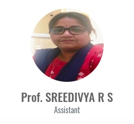
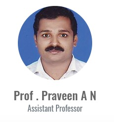

FACULTY

Dr. Vijayanand K S
Professor and Head
HEAD OF DEPARTMENT
Department of Information Technology started in 2000 with undergraduate B.Tech and postgraduate M.Tech (Network Engineering) in 2013. It functions with dedicated faculty members, modern labs, and smart classrooms. The department emphasizes outcome-based education, student research, training programmes, remedial classes, poster presentations, and GATE coaching. Many student projects receive funding every year.
FACULTY PROFILE

Prof. Rejin.R
Assistant Professor
Prof. Sonia Joseph
Assistant Professor
Prof. Naveena Jose
Assistant Professor

Prof. Sreedivya R S
Assistant

Prof. Ratheesh T K
Assistant Professor
Prof. Divya Prasad K H
Assistant Professor
Sudhina Surendran
Assistant Professor
Prof. Preenumol P
Assistant Professor
Prof. Safeena
Assistant Professor

Prof. Praveen A N
Assistant Professor